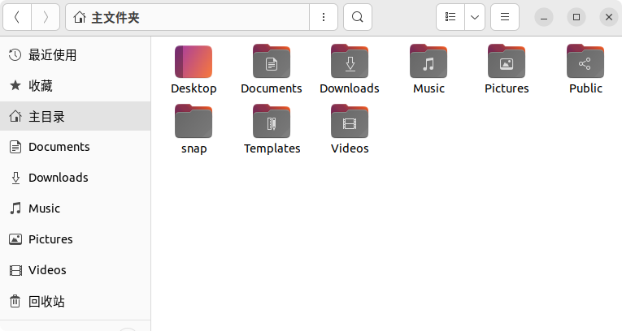
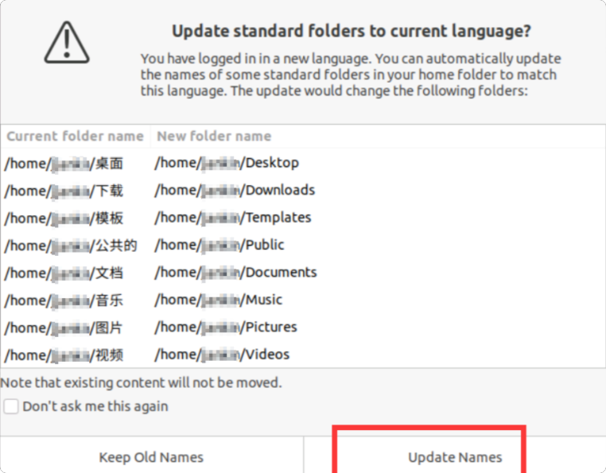
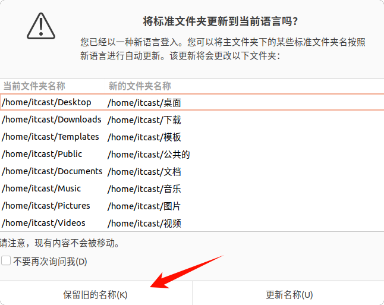

<!DOCTYPE lake>
<p data-lake-id="u71db9b1b" id="u71db9b1b"><span class="lake-fontsize-12" data-lake-id="u5bba4ce1" id="u5bba4ce1" style="color: rgb(51, 51, 51)">为了方便命令行进行目录切换，推荐将 Ubuntu 22.04 的用户目录（如桌面、下载等）改为英文，主要有两种方法。</span></p><p data-lake-id="uba82272e" id="uba82272e"></p><p data-lake-id="udcd5fe07" id="udcd5fe07"><span class="lake-fontsize-12" data-lake-id="ub6a08500" id="ub6a08500" style="color: rgb(51, 51, 51)">你可以根据自己的习惯，看看哪种更合适：</span></p><table class="lake-table" data-lake-id="nkYTE" id="nkYTE" style="width: 750px"><colgroup><col width="250"/><col width="250"/><col width="250"/></colgroup><tbody><tr data-lake-id="u4fb5bf4a" id="u4fb5bf4a"><td data-lake-id="u01f68cf1" id="u01f68cf1"><p data-lake-id="u4b8ed068" id="u4b8ed068" style="text-align: left"><strong><span class="lake-fontsize-12" data-lake-id="u6ecdc7c3" id="u6ecdc7c3" style="color: rgb(51, 51, 51)">方法</span></strong></p></td><td data-lake-id="u54bef2d0" id="u54bef2d0"><p data-lake-id="u22cf5526" id="u22cf5526" style="text-align: left"><strong><span class="lake-fontsize-12" data-lake-id="ue8f9c54b" id="ue8f9c54b" style="color: rgb(51, 51, 51)">核心操作</span></strong></p></td><td data-lake-id="u4b77baf5" id="u4b77baf5"><p data-lake-id="u79d856bb" id="u79d856bb" style="text-align: left"><strong><span class="lake-fontsize-12" data-lake-id="u30146bb5" id="u30146bb5" style="color: rgb(51, 51, 51)">适用人群</span></strong></p></td></tr><tr data-lake-id="u2a7a7802" id="u2a7a7802"><td data-lake-id="uee21eda7" id="uee21eda7"><p data-lake-id="u4461d874" id="u4461d874" style="text-align: left"><strong><span class="lake-fontsize-12" data-lake-id="u7f68de49" id="u7f68de49" style="color: rgb(51, 51, 51)">方法一：系统弹窗法</span></strong></p></td><td data-lake-id="u3410ebbd" id="u3410ebbd"><p data-lake-id="u0d2f232b" id="u0d2f232b" style="text-align: left"><span class="lake-fontsize-12" data-lake-id="u70254cda" id="u70254cda" style="color: rgb(51, 51, 51)">运行一个命令，让系统自己生成英文目录并处理迁移</span></p></td><td data-lake-id="udf5b7849" id="udf5b7849"><p data-lake-id="uaa6402ed" id="uaa6402ed" style="text-align: left"><span class="lake-fontsize-12" data-lake-id="u235fa65a" id="u235fa65a" style="color: rgb(51, 51, 51)">操作最简单，适合追求快速高效、不想手动改配置的新手。</span></p></td></tr><tr data-lake-id="ua7234215" id="ua7234215"><td data-lake-id="ufd8814a9" id="ufd8814a9" style="background-color: rgb(248, 248, 248)"><p data-lake-id="u01b9dee4" id="u01b9dee4" style="text-align: left"><strong><span class="lake-fontsize-12" data-lake-id="u3aeb3e76" id="u3aeb3e76" style="color: rgb(51, 51, 51)">方法二：手动配置法</span></strong></p></td><td data-lake-id="u88b8fbc3" id="u88b8fbc3" style="background-color: rgb(248, 248, 248)"><p data-lake-id="ucbcd0402" id="ucbcd0402" style="text-align: left"><span class="lake-fontsize-12" data-lake-id="uf528e25f" id="uf528e25f" style="color: rgb(51, 51, 51)">手动修改配置文件，并手动移动文件夹内的文件</span></p></td><td data-lake-id="u4562bf49" id="u4562bf49" style="background-color: rgb(248, 248, 248)"><p data-lake-id="u16e741a6" id="u16e741a6" style="text-align: left"><span class="lake-fontsize-12" data-lake-id="u8b7e44d9" id="u8b7e44d9" style="color: rgb(51, 51, 51)">控制更精准，不容易出岔子，适合喜欢自己动手的“稳健派”。</span></p></td></tr></tbody></table><hr/><h3 data-lake-id="0a04d05c" id="0a04d05c"><span data-lake-id="u547d767a" id="u547d767a" style="color: rgb(51, 51, 51)">方法一：系统弹窗法（推荐新手）</span></h3><p data-lake-id="u23f1dcf9" id="u23f1dcf9"><span class="lake-fontsize-12" data-lake-id="ue24cf5a5" id="ue24cf5a5" style="color: rgb(51, 51, 51)">这个方法最省心，系统会自动帮你完成创建、迁移和配置的全部工作。</span></p><ol list="uf24e2fde"><li data-lake-id="u2160a076" fid="uc071345f" id="u2160a076"><strong><span class="lake-fontsize-12" data-lake-id="ud1443200" id="ud1443200" style="color: rgb(51, 51, 51)">打开终端</span></strong><span class="lake-fontsize-12" data-lake-id="u5f5b341e" id="u5f5b341e" style="color: rgb(51, 51, 51)">，输入以下命令，临时把系统语言环境切换到英文，然后运行更新工具：</span></li></ol><span class="yuque-card-unsupported">[codeblock]</span><p data-lake-id="u49f83496" id="u49f83496"><span class="lake-fontsize-12" data-lake-id="uebce75d3" id="uebce75d3" style="color: rgb(119, 119, 119)">运行后，屏幕上会立刻弹出一个对话框</span></p><ol list="uf24e2fde" start="2"><li data-lake-id="u4f5cceed" fid="uc071345f" id="u4f5cceed"><strong><span class="lake-fontsize-12" data-lake-id="udcbae057" id="udcbae057" style="color: rgb(51, 51, 51)">在对话框中点击“Update Names”</span></strong><span class="lake-fontsize-12" data-lake-id="ud3c49990" id="ud3c49990" style="color: rgb(51, 51, 51)">，系统就会自动创建并切换至英文目录</span></li></ol><p data-lake-id="udcd52f26" id="udcd52f26"></p><p data-lake-id="u89abe512" id="u89abe512"><br/></p><p data-lake-id="u3da61e47" id="u3da61e47"><strong><span class="lake-fontsize-12" data-lake-id="u204fff75" id="u204fff75" style="color: rgb(51, 51, 51)">恢复系统语言并拒绝“回滚”</span></strong><span class="lake-fontsize-12" data-lake-id="u2674986b" id="u2674986b" style="color: rgb(51, 51, 51)">。这步很关键，以防重启后目录又变回中文。继续在终端输入：</span></p><ol list="uf24e2fde" start="3"><li data-lake-id="ubad50fea" fid="uc071345f" id="ubad50fea"><span class="lake-fontsize-12" data-lake-id="u514c1793" id="u514c1793" style="color: rgb(51, 51, 51)">export LANG=zh_CN</span></li></ol><p data-lake-id="u5f7cb2ab" id="u5f7cb2ab"><span class="lake-fontsize-12" data-lake-id="ubcdb6803" id="ubcdb6803" style="color: rgb(51, 51, 51)">接下来，</span><strong><span class="lake-fontsize-12" data-lake-id="u84c91dab" id="u84c91dab" style="color: rgb(51, 51, 51)">重启电脑</span></strong><span class="lake-fontsize-12" data-lake-id="u48daa4c5" id="u48daa4c5" style="color: rgb(51, 51, 51)">。重启后，系统会弹窗询问“是否将目录改回中文”，请务必选择 </span><strong><span class="lake-fontsize-12" data-lake-id="uc3f738ba" id="uc3f738ba" style="color: rgb(51, 51, 51)">“保留旧名称” (Keep Old Names)</span></strong><span class="lake-fontsize-12" data-lake-id="u9c1aa12c" id="u9c1aa12c" style="color: rgb(51, 51, 51)"> 。</span></p><p data-lake-id="u6cab8bc4" id="u6cab8bc4"><span data-lake-id="u264c437b" id="u264c437b" style="color: rgb(51, 51, 51)">​</span></p><h3 data-lake-id="f428c4a4" id="f428c4a4"><span data-lake-id="u1e3c6a89" id="u1e3c6a89" style="color: rgb(51, 51, 51)">方法二：手动配置法（适合稳健派）</span></h3><p data-lake-id="ub287a2cd" id="ub287a2cd"><span class="lake-fontsize-12" data-lake-id="u90e81698" id="u90e81698" style="color: rgb(51, 51, 51)">如果你想清楚每一步发生了什么，可以采用这个方法。</span></p><p data-lake-id="u6d1ead08" id="u6d1ead08"><strong><span class="lake-fontsize-12" data-lake-id="ua3649235" id="ua3649235" style="color: rgb(51, 51, 51)">修改配置文件</span></strong><span class="lake-fontsize-12" data-lake-id="ucca58c62" id="ucca58c62" style="color: rgb(51, 51, 51)">：用文本编辑器打开配置文件：</span></p><ol list="u5e5bff35"><li data-lake-id="ue747edf0" fid="ufe79ed78" id="ue747edf0"><span class="lake-fontsize-12" data-lake-id="u4216963b" id="u4216963b" style="color: rgb(51, 51, 51)">gedit ~/.config/user-dirs.dirs</span></li><li data-lake-id="ua0e78c01" fid="ufe79ed78" id="ua0e78c01"><strong><span class="lake-fontsize-12" data-lake-id="ufa079c45" id="ufa079c45" style="color: rgb(51, 51, 51)">编辑配置内容</span></strong><span class="lake-fontsize-12" data-lake-id="udeb3aa74" id="udeb3aa74" style="color: rgb(51, 51, 51)">：将文件里所有的中文路径，替换成你想要的英文名。比如：</span></li></ol><span class="yuque-card-unsupported">[codeblock]</span><p data-lake-id="u09490e90" id="u09490e90"><span class="lake-fontsize-12" data-lake-id="u60248d5e" id="u60248d5e" style="color: rgb(51, 51, 51)">其他目录的对照表如下，可根据自己喜好修改：</span></p><ul data-lake-indent="1" list="u3c079834"><li data-lake-id="u4c3c34a4" fid="u71bc0145" id="u4c3c34a4"><span class="lake-fontsize-12" data-lake-id="ucc12f784" id="ucc12f784" style="color: rgb(51, 51, 51)">桌面 → </span><strong><span class="lake-fontsize-12" data-lake-id="u2c03d8f4" id="u2c03d8f4" style="color: rgb(51, 51, 51)">Desktop</span></strong></li><li data-lake-id="u577fd39f" fid="u71bc0145" id="u577fd39f"><span class="lake-fontsize-12" data-lake-id="uc8274df9" id="uc8274df9" style="color: rgb(51, 51, 51)">文档 → </span><strong><span class="lake-fontsize-12" data-lake-id="u1d3b0acb" id="u1d3b0acb" style="color: rgb(51, 51, 51)">Documents</span></strong></li><li data-lake-id="ud7e9b1e4" fid="u71bc0145" id="ud7e9b1e4"><span class="lake-fontsize-12" data-lake-id="u043ce0f2" id="u043ce0f2" style="color: rgb(51, 51, 51)">下载 → </span><strong><span class="lake-fontsize-12" data-lake-id="u60a1480e" id="u60a1480e" style="color: rgb(51, 51, 51)">Downloads</span></strong></li><li data-lake-id="ub4cc8b4a" fid="u71bc0145" id="ub4cc8b4a"><span class="lake-fontsize-12" data-lake-id="u40a281f3" id="u40a281f3" style="color: rgb(51, 51, 51)">音乐 → </span><strong><span class="lake-fontsize-12" data-lake-id="u28260a73" id="u28260a73" style="color: rgb(51, 51, 51)">Music</span></strong></li><li data-lake-id="u34757eff" fid="u71bc0145" id="u34757eff"><span class="lake-fontsize-12" data-lake-id="u8293a3e8" id="u8293a3e8" style="color: rgb(51, 51, 51)">图片 → </span><strong><span class="lake-fontsize-12" data-lake-id="ub1dfdd71" id="ub1dfdd71" style="color: rgb(51, 51, 51)">Pictures</span></strong></li><li data-lake-id="u5d781a51" fid="u71bc0145" id="u5d781a51"><span class="lake-fontsize-12" data-lake-id="u45b3302c" id="u45b3302c" style="color: rgb(51, 51, 51)">视频 → </span><strong><span class="lake-fontsize-12" data-lake-id="u647acc28" id="u647acc28" style="color: rgb(51, 51, 51)">Videos</span></strong></li><li data-lake-id="ub78f3198" fid="u71bc0145" id="ub78f3198"><span class="lake-fontsize-12" data-lake-id="ua0c13707" id="ua0c13707" style="color: rgb(51, 51, 51)">模板 → </span><strong><span class="lake-fontsize-12" data-lake-id="uff321cf3" id="uff321cf3" style="color: rgb(51, 51, 51)">Templates</span></strong></li><li data-lake-id="u00c0db14" fid="u71bc0145" id="u00c0db14"><span class="lake-fontsize-12" data-lake-id="ud5894c2e" id="ud5894c2e" style="color: rgb(51, 51, 51)">公共 → </span><strong><span class="lake-fontsize-12" data-lake-id="u73021431" id="u73021431" style="color: rgb(51, 51, 51)">Public</span></strong></li></ul><ol list="u5e5bff35" start="3"><li data-lake-id="u266d3d85" fid="ufe79ed78" id="u266d3d85"><strong><span class="lake-fontsize-12" data-lake-id="u5590ac54" id="u5590ac54" style="color: rgb(51, 51, 51)">重命名实际文件夹</span></strong><span class="lake-fontsize-12" data-lake-id="ud606c86b" id="ud606c86b" style="color: rgb(51, 51, 51)">：光改配置不行，还得让实际文件夹的名字和配置对上。这一步需要用到 </span><code data-lake-id="u112604be" id="u112604be"><span class="lake-fontsize-12" data-lake-id="u2d06fa04" id="u2d06fa04" style="color: rgb(51, 51, 51); background-color: rgb(243, 244, 244)">mv</span></code><span class="lake-fontsize-12" data-lake-id="u94d95d97" id="u94d95d97" style="color: rgb(51, 51, 51)"> 命令，</span><strong><span class="lake-fontsize-12" data-lake-id="u6b9c8368" id="u6b9c8368" style="color: rgb(51, 51, 51)">请务必确保路径与你配置文件中的设置一致</span></strong><span class="lake-fontsize-12" data-lake-id="u5591e1fb" id="u5591e1fb" style="color: rgb(51, 51, 51)">。</span></li></ol><p data-lake-id="u950d7da7" id="u950d7da7"><span class="lake-fontsize-12" data-lake-id="u0d842535" id="u0d842535" style="color: rgb(51, 51, 51)">​</span><br/></p><span class="yuque-card-unsupported">[codeblock]</span>